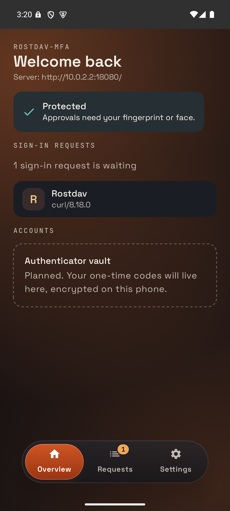
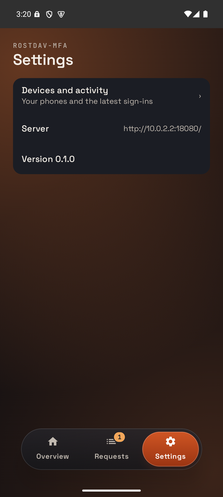

Your security. Your control.
rostdav-mfa approves sign-ins to your own Rostdav server with a tap and your fingerprint. No account, no cloud, no third party.

What it does
Number matching
The browser shows one number. Your phone shows three. You pick the right one, so a request you did not start cannot be approved by accident.
Signed with your fingerprint
The approval key lives in the phone's hardware-backed keystore. It is used only after your fingerprint or face, and it never leaves the phone.
Runs on your own Rostdav
The app talks only to your server. The default build needs no Google service; it checks in for new requests while the app is open.
How it works
Sign in
You sign in to Rostdav in a browser and choose to send the request to your phone. The page shows a number.
Match
Your phone shows the service, the device and the rough place. You pick the number the browser shows.
Confirm
You confirm with your fingerprint or face. The browser signs in. Pick wrong, or tap Deny, and the sign-in is refused.
The app




Security model
- Hardware-backed key. The approval key is created in the Android keystore and is used only after biometrics.
- Everything is signed. Requests and answers carry signatures; the server checks signature, number and time.
- No tracking. The app has no account, no analytics, and talks only to your Rostdav server.
- Screenshots blocked. The approve screen blocks screen capture and the recents preview.
- Lost phone. Remove it in your Rostdav account; it can never approve a sign-in again.
Status
Working today
Enrollment by QR code or by hand, number matching, biometric approval, the list of your phones and recent events, removing a phone, dark and light themes, English and German. Tested on an emulator against a real Rostdav.
Planned: authenticator vault
One-time codes for other services, stored encrypted on the phone. Planned, not built. There is no store release yet; you build the app from source.